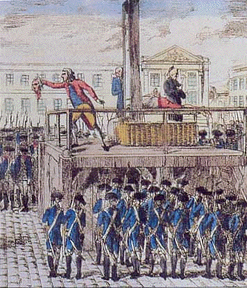

TSTP Files

File Format
- Header
- Information about the problem and solution process
- Information about the resources used
- Statistics
- Comments
- Formulae in TSTP format
- Original system output (as comments)
Sample
%------------------------------------------------------------------------------
% File : Otter---3.2
% Problem : CAT001-3 : TPTP v1.0.0
% Transform : rm_equality:stfp
% Format : otter:hypothesis:set(auto),clear(print_given)
% Command : otter-script %s
% Computer : diver.cs.jcu.edu.au
% Model : SUNW,Ultra-80
% CPU : sparcv9 @ 450MHz
% Memory : 256MB
% OS : SunOS 5.8
% CPULimit : 600s
% Result : Unsatisfiable 0.2s
% Output : Refutation 0.2s
% Statistics : Number of clauses : 10 ( 15 expanded)
% Depth : 4
% Number of literals : 27 ( 41 expanded)
% Maximal clause size : 4 ( 2 average)
% Maximal term depth : 3 ( 2 average)
% Verified :
% Comments :
%------------------------------------------------------------------------------
%----TSTP SOLUTION
% 13 [] -equal(compose(compose(a,b),A),B)| -equal(compose(compose(a,b),C),B)|equal(A,C).
cnf(13,initial,
( ~equal(compose(compose(a,b),A),B)
| ~equal(compose(compose(a,b),C),B)
| equal(A,C) ),
file('CAT001-3+rm_eq_stfp.in',unknown),
[]).
...
% 533 [binary,532.1,17.1] $F.
cnf(533,derived,
( false ),
inference(binary,[thm],[532,17]),
[iquote('binary,532.1,17.1')]).
%------------------------------------------------------------------------------
%----ORIGINAL SYSTEM OUTPUT
% ----- Otter 3.2-beta3, May 2001 -----
% The process was started by tptp on diver,
% Fri Nov 15 10:23:44 2002
% The command was "/home/tptp/Systems/Otter-MACE---3.2-2.0/otter". The process ID is 10669.
%
% set(prolog_style_variables).
% set(tptp_eq).
% set(auto).
% dependent: set(auto1).
...
% Process 10669 finished Fri Nov 15 10:23:44 2002
% PROOF FOUND
%------------------------------------------------------------------------------